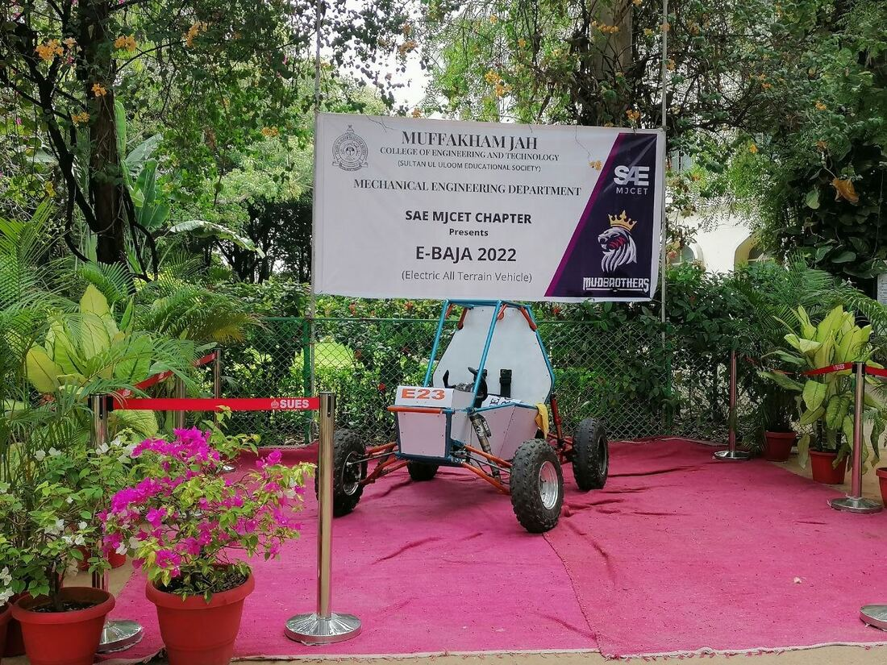
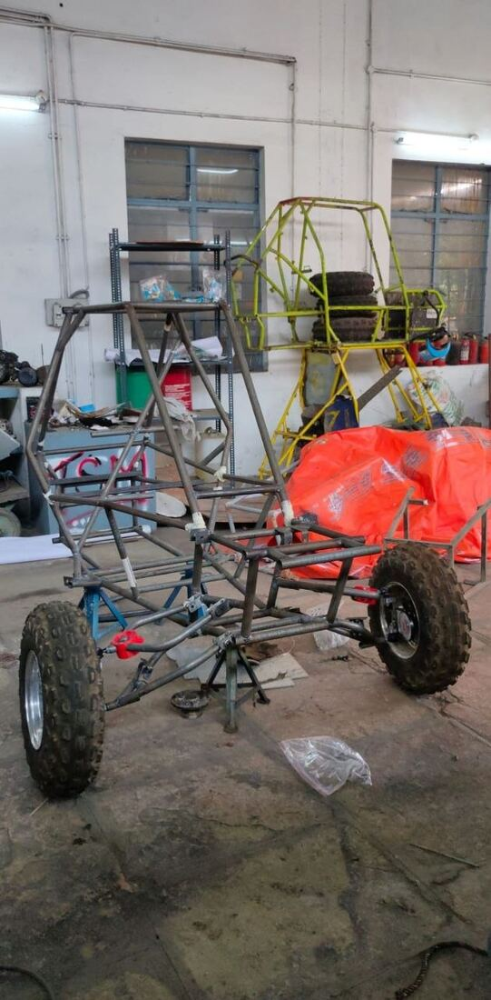
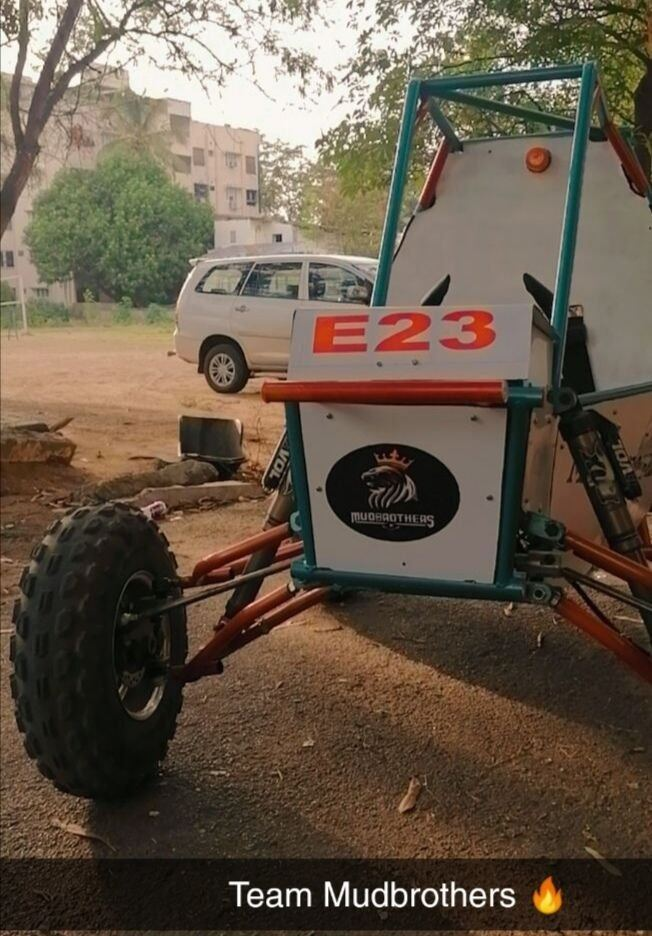
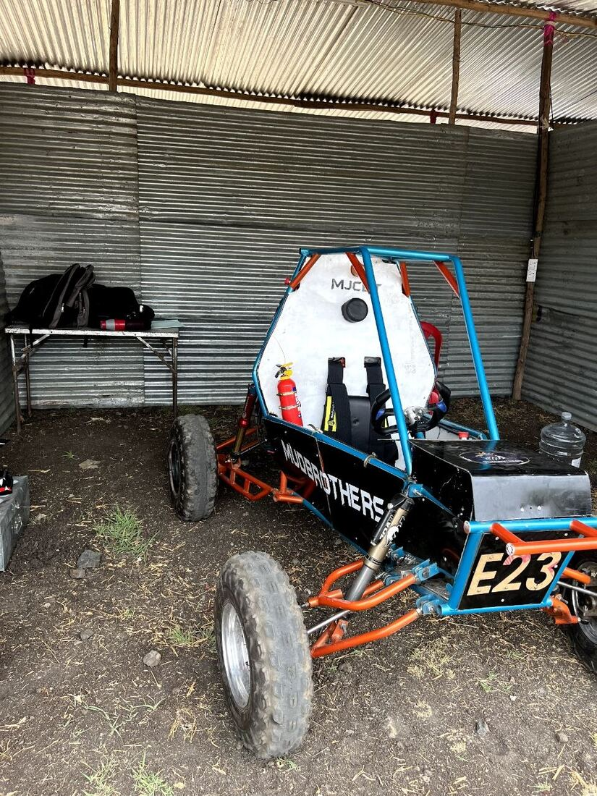
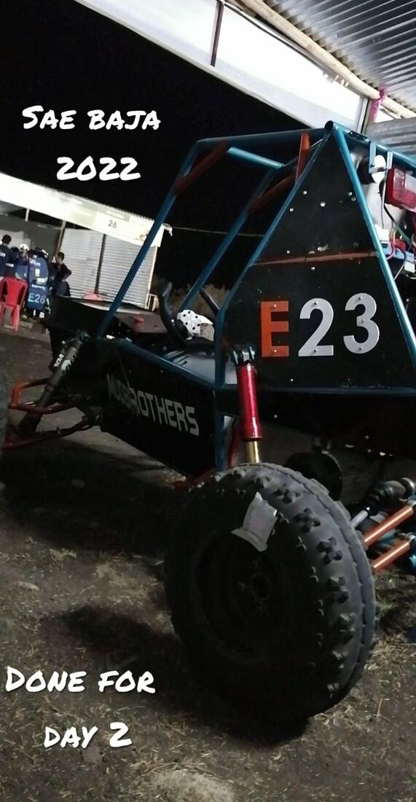
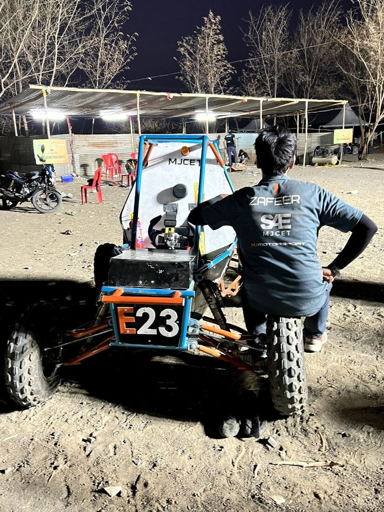
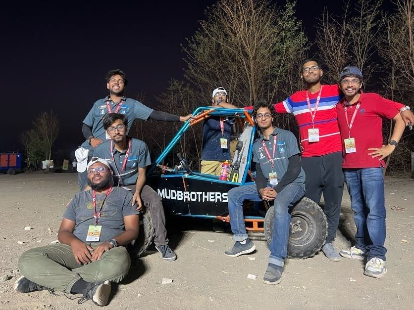
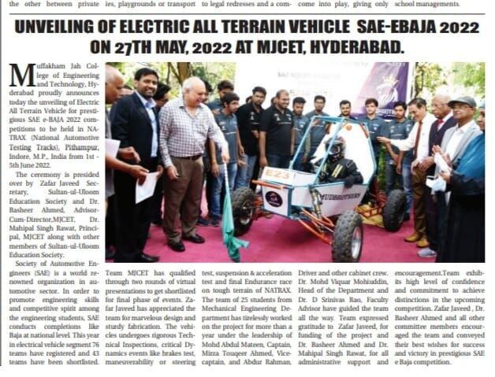

10 / VEHICLE DESIGN
Electric All-Terrain Vehicle
A year of work on an electric ATV for SAE INDIA E-BAJA 2022, cleared through every mechanical inspection.
- Role
- Team member, Team MudBrothers
- Context
- SAE INDIA E-BAJA 2022, representing MJCET
- Tools
- Space-frame chassis design, vehicle packaging, electric powertrain integration
- Scope
- A full electric all-terrain vehicle taken from design to national competition
- Output
- All mechanical inspections cleared; roughly 4 hours of drive time and a 60 km/h top speed
- Skills
- Space-frame chassis
- Vehicle packaging
- Electric powertrain integration
- Mechanical inspection
- Team fabrication
A year of work building an electric all-terrain vehicle to compete in SAE INDIA E-BAJA 2022, under the banner of Team MudBrothers, representing Muffakham Jah College of Engineering and Technology. The team cleared every mechanical inspection at the event.
The vehicle gives roughly four hours of drive time with a top speed of 60 km/h, and is built to be driven on hills, rocky ground and broken terrain. The unveiling at MJCET on 27 May 2022 was covered in the local press.








4 h drive time60 km/h top speedAll mechanical inspections cleared
Space-frame chassisVehicle packagingElectric powertrain integrationMechanical inspection